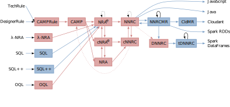

Q*cert: Commented Coq Development
Joshua Auerbach, Martin Hirzel, Louis Mandel, Avraham Shinnar and Jérôme Siméon
Overview
Q*cert is a query compiler: it takes some input query and generates code for execution. It can compile several source query languages, such as (subsets of) SQL and OQL. It can produce code for several target backends, such as Java, JavaScript, Cloudant and Spark.
Q*cert implements several intermediate languages useful for compilation and optimization. The semantics of each of them is defined using the Coq proof assistant.
Compilation Pipeline
This figure represents the general architecture of the compiler with its all intermediate languages and the different compilation paths.
Code Organization
The general organization of the source code available in Q*cert is the following:
bin: directory where binaries are installedcoq: the Coq source code of the compilerdoc: documentation and Web demojavaService: code to integrate the Java parsers (for SQL, SQL++, and ODM rules)jrulesParser: ODM rules parserocaml: OCaml code of the command line compilerruntime: runtime libraries for the different backendssamples: examples of queries in various source languagesscripts: utility scriptssqlParser: SQL parsersqlppParser: SQL++ parser
General-purpose libraries
The coq/Utils directory contains general purpose
libraries, tactics and lemmas used throughout the system.
- CoqLibAdd: definitions and lemmas complementing those found in the Coq Library.
- ListAdd: Additional definitions and lemmas on lists.
- StringAdd: Additional definitions and lemmas on strings, including the definition of a total order relation on strings.
- SortingAdd: insertion sort, and additional lemmas on sorting
- Digits: definition and properties of integers, represented as list of digits in base 'n'
- Lattice: definition of a lattice (loosely based on ideas from A reflection-based proof tactic for lattices in Coq and http://www.pps.univ-paris-diderot.fr/~sozeau/repos/coq/order).
- Lift: definitions and properties of lifting operations over option types.
- Assoc: definitions and properties of association lists.
- Sublist: definitions and properties of sub-lists.
- Compat: notion of compatibility between two association lists.
- Fresh: support for creating and reasoning about fresh names (represented as strings).
- Bindings and BindingsNat: support for association lists for which the keys are ordered and with no duplicates.
- Bag: support for bags (or multisets).
Common components, data model, type system, built-in operators
The coq/Common directory contains components shared
across languages. It includes:
Common/Logger: support for producing log tracesCommon/Data: definition and properties of the data modelCommon/Env: support for environmentsCommon/Operators: syntax and semantics for built-in operatorsCommon/TypeSystem: definition and properties of the type systemCommon/Typing: typing for the data model and the built-in operatorsCommon/JSON: JSON conversions for data and types
Languages
In the coq directory, each language has its own
directory with a subdirectory Lang containing the
syntax (Abstract Syntax Tree) and the definition of the semantics of
the language. Then, depending on the language, some additional
subdirectory can be present. For example, it is possible to find
a Optim subdirectory containing the optimizer for the
language, or a Typing subdirectory containing the type
checker.
The supported languages are:
- TechRule: ODM technical rules (Syntax)
- DesignerRule: ODM designer rules (Syntax)
- CAMPRule: Rule Macros for CAMP (Syntax, Semantics)
- NRA𝝀: NRA with Lambdas (Syntax, Semantics)
- SQL: Structured Query Language (Syntax)
- SQL++: Structured Query Language extended for JSON (Syntax)
- OQL: Object Query Language (Syntax, Semantics)
- CAMP: Calculus of Aggregating Matching Patterns (Syntax, Semantics, Typing)
- NRA: Nested Relational Algebra (Syntax, Semantics, Typing)
- NRAe: NRA with Environments (Syntax, Semantics, Typing, Optimizer)
- cNRAe: Core NRAe (Syntax, Semantics, Typing)
- NNRC: Named Nested Relational Calculus (Syntax, Semantics, Typing, Optimizer)
- cNNRC: Core NNRC (Syntax, Semantics, Typing)
- DNNRC: Distributed NNRC (Syntax, Semantics, Typing)
- tDNNRC: Typed DNNRC (Syntax, Semantics, Optimizer)
- NNRCMR: NNRC extended with Map/Reduce (Syntax, Semantics, Optimizer)
- CldMR: NNRC extended with Map/Reduce for Cloudant (Syntax, Semantics)
Translations
The coq/Translation directory contains all the
translation functions that compiles a language into another.
When possible, a corresponding proof of correctness (semantics preservation) and a proof of type preservation for the translation are also included.
The existing translations are:
- From TechRule:
- To CAMPRule (Translation in Java)
- From DesignerRule:
- To CAMPRule (Translation in Java)
- From CAMPRule
- To CAMP (Translation through macro-expansion, Correctness)
- From NRA𝝀:
- From SQL:
- To NRAe (Translation)
- From SQL++:
- To NRAe (Translation)
- From OQL:
- To NRAe (Translation, Correctness)
- From CAMP:
- From NRA:
- To cNNRC (Translation, Correctness, Type Preservation)
- To cNRAEnv (Translation, Correctness)
- From NRAe:
- To NNRC (Translation, Correctness)
- To cNRAEnv (Translation through macro expansion, Correctness)
- From cNRAe:
- To cNNRC (Translation, Correctness, Type Preservation)
- To NRAEnv (Translation, Correctness)
- From NNRC:
- To cNNRC (Translation through macro expansion, Correctness)
- To DNNRC (Translation, Correctness)
- To NNRCMR (Translation)
- From cNNRC:
- To NNRC (Translation through direct inclusion, Correctness)
- To CAMP (Translation, Correctness, Type Preservation)
- From DNNRC:
- To tDNNRC (Translation through type inference)
- From tDNNRC:
- From NNRCMR:
- To NNRC (Translation)
- To CldMR (Translation)
- From CldMR:
Compiler Driver
The coq/Compiler directory contains the compiler
driver.
References
The Q*cert development, notably the choices of intermediate representations, builds on earlier work:
- The most complete treatment for the Nested Relational Algebra (NRA) used by Q*cert can be found in Guido Moerkotte's Building Query Compilers book (See Chapter 7: An Algebra for Sets, Bags, and Sequences).
- Our main reference for the Named Nested Relational Calculus (NNRC) is Polymorphic Type Inference for the Named Nested Relational Calculus by Jan Van den Bussche and Stijn Vansummeren.
- The Object Query Language (OQL) supported by Q*cert is based on the ODMG standard and was originally designed by Sophie Cluet.